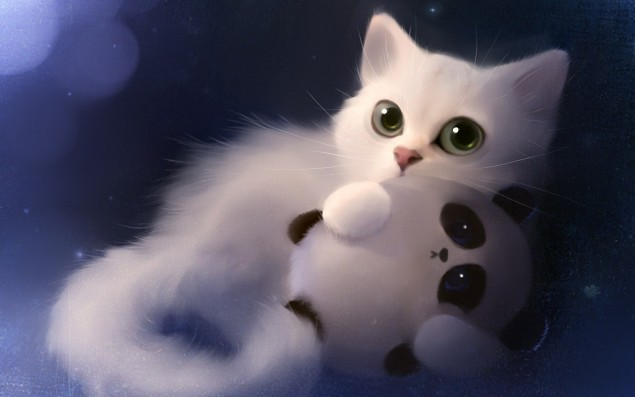

Once upon a time there were cat and a panda. They were in one zoo, but sat in different cages. Also saw sometimes when it was necessary to pass on knowledgatering place . The cat wasn't really glad to go there, but when has seen a panda his ears were nemno pricked up. The panda was beautiful, on her there was a usual wool, as well as on other her relatives, but her wool has been accurately weaved into fancy patterns which the cat admired.
Однажды жили были кот и панда. Они были в одном зоопарке, но сидели в разных клетках. И виделись иногда, когда нужно было пройти на знаниепой . Кот был не очень рад ходить туда, но когда увидел панду его уши немно навострились. Панда была красивой, на ней была обычная шерсть, как и на других ее сородичах, но ее шерсть была аккуратно сплетена в причудливые узоры, которыми кот любовался.
And here, the panda has seen as the cat stares at her the blue eyes. He has stood, has numbed, because it is not indecently. -" what to do next, not indecently to watch it for other animals" - Rushed in his head. But right there all fears have left - the panda has smiled to him!
И вот, панда увидела как кот таращится на нее своими голубыми глазами. Он замер, оцепенел. -" что делать дальше, это ведь не красово смотреть за другими животными"- Проносилось в его голове. Но тут же все страхи ушли - панда улыбнулась ему!
Over and over again the cat waited when again sees a panda. All her friends knew about her. Tow-haired, the most courageous, advised to drink from the Lion bowl (the wizard of the oz city) and though to mew something. But a cat, thinking out different excuses, I haven't made it. There was a time, to a cat filled the most tasty food, there was a new series of his favourite TV show and he has wanted to share the happiness. He have photographed and has laid out in vzoo.com network. And the panda has liked his photo.
Раз за разом кот ждал когда снова увидит панду. О ней знали все ее друзья. Белобрысый, самый смелый, советовал отпить из миски Льва (волшебник изумруного города) и хоть что-то мяукнуть. Но кот, придумывая разные отговорки, не сделал этого. Шло время, коту насыпали вкуснейшую еду, вышла новая серия его любимого сериала и он захотел поделиться своим счастьем. Сфотографировал и выложил в сеть vzoo.com. И панда лайкнула его фото.
There were no doubts. He was pleasant to her. And the cat, has begun to write her...
Тут уж небыло сомнений. Он ей понравился. И кот, принялся писать ей...
A lot of miscellaneous happened during all the time. The cat and a panda were reconciled, quarreled, dispersed and again met.
Много разного случилось за все время. Кот и панда мирились, ссорились, расходились и снова сходились.
29.02.2016This was the first time I made you an purposal. I found you walking down the stairs to the shower. When I got on one knee, I gave you a kinder and turned on that song (as you know, i like songs withc consist from making sanse text and songs on this page are not expection)
Это был первый раз, когда я сделал тебе предложение. Я застал тебя бегущей по лестнице в душ. Стал на одно колено, подарил киндер и включил эту песню (как ты знаешь, я люблю песни с осмысленным текстом, и песни на этой странице не исключение)
And here, the cat who has promised to spend the whole day together must spend day not with her. And kind of the cat didn't understand that it isn't correct what sad he wouldn't come to a panda, she become sadnest more and more.
И вот, кот, который пообещал провести весь день вместе, должен был провести день не с ней. И как бы кот не понимал что это не правильно, каким бы грустным он не приходил к панде, она все больше грустнела.
And here, when the cat joyful ran to a panda, to lick her wounds he has learned that the panda become in a dragon and has fly away.
И вот, когда кот радостный бежал к панде, зализывать ее раны он узнал, что панда првратилась в дракона и улетела.
The cat contacted her and heard only - "I don't love you, you aren't interesting to me, I hate you, you are a smelly cat".
It has very much wounded him, but the cat knew that it is told not by his panda, but a dragon. His panda just didn't want that a cat, hurt her, even accidentally having scratched little bit.
Кот связывался с ней и слышал только -"я тебя не люблю, ты мне не интересен, ненавижу тебя, ты вонючий кот".
Это его очень ранило, но кот знал, что это говорит не его панда, а дракон. Его панда просто не хотела чтобы кот, причинял ей боль, даже случайно царапнув.
To cat more nothing remained except how to dress a knightly armor and to go for fight with a dragon.
Коту больше ничего не оставалось, кроме как одеть рыцарские домпехи и пойти сражаться с драконом
He knew, it isn't simple to overcome a dragon, but he has no other exit. As the prophecy says - the cat won't be able to live without panda. Or he will take away her from a dragon or will die. Another can't be
Он знал, одолеть дракона будет не просто, но у него небыло другого выхода. Как гласит пророчество - "Кот не сможет жить без Панды. Или он заберет ее у дракона или умрет. Другого выхода нет."
| I don't want this moment to ever end. | Я не хочу, чтобы этот миг закончился, |
| Where everything's nothing without you. | Ведь без тебя всё – это ничто. |
| I want you to know; with everything I won't let this go. | Я хочу, чтобы ты знала, я не отпущу тебя ни за что – |
| These words are my heart and soul (so I hold on) | Это не пустые слова - слова от сердца. |
| I'll hold on to this moment you know. | Я буду держаться за этот миг, ты ведь знаешь. |
| Cause I'll bleed my heart out to show and I won't let go. | Я умру за то, чтобы доказать, что не отпущу тебя. |